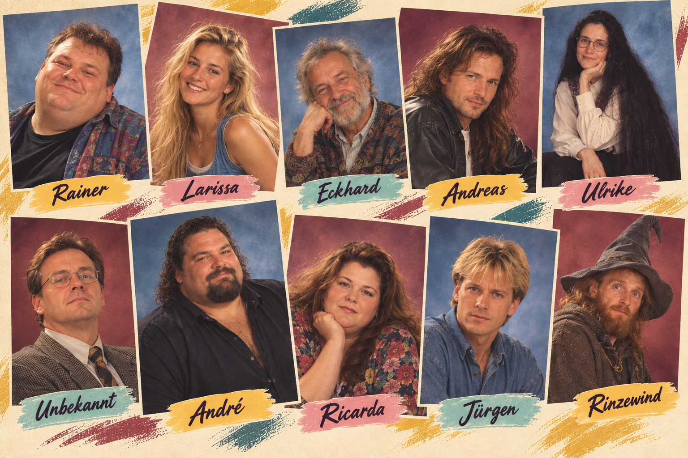

Online-Partnervermittlung · Seit 1997
KONTAKT♥
ANZEIGEN
Herz sucht Herz · Wer passt zu wem?
Zehn Singles suchen die große Liebe. Sieh dir die Personen an und höre ihre Kontaktanzeigen. Finde anschließend heraus, wer wirklich zu wem passt.
Unsere Singles

♥ 10 Singles · 10 Geschichten · vielleicht 5 große Lieben ♥